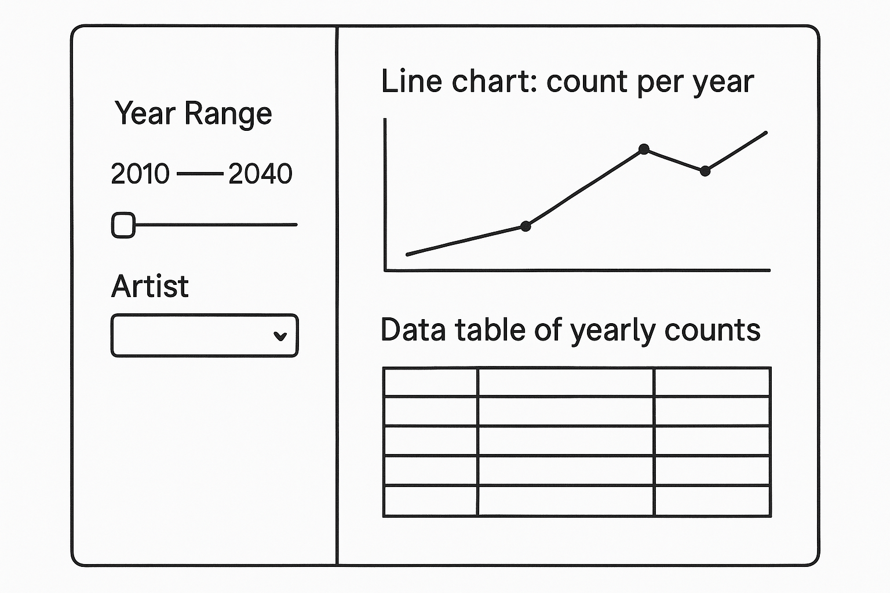
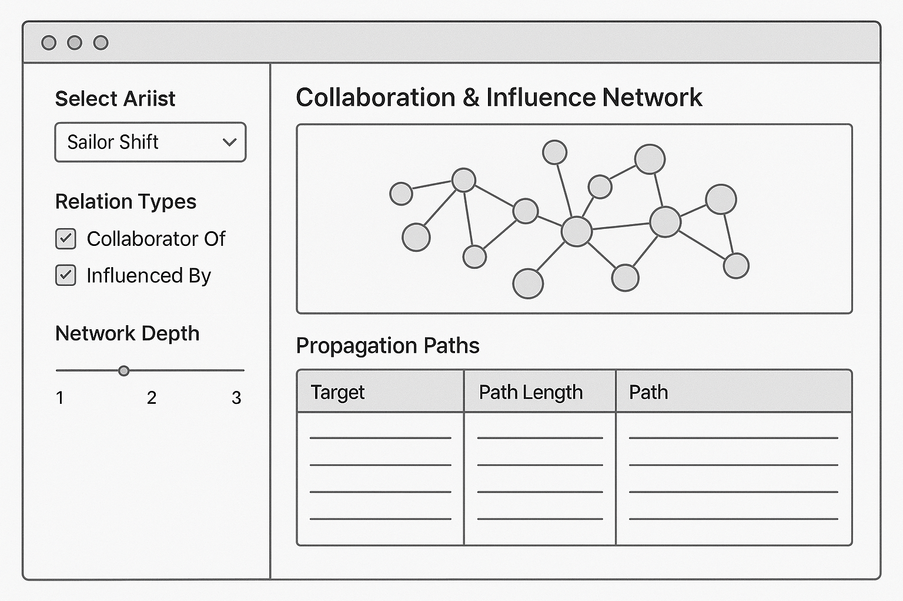
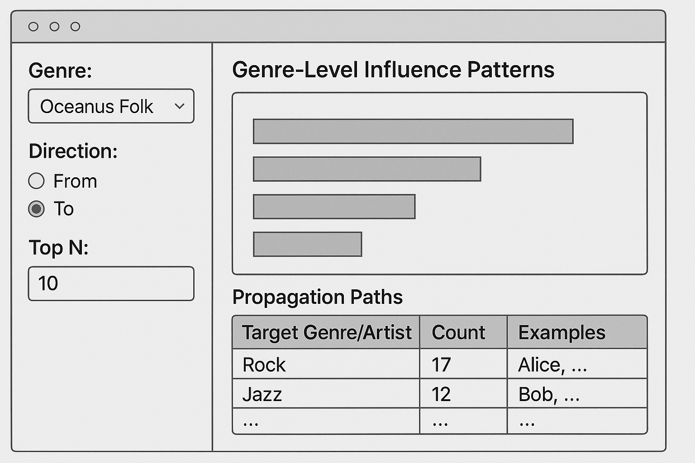

Before wiring up the Shiny module, we encapsulate our data-manipulation steps into a reusable function and verify its basic behavior:
Show code
library(dplyr)library(lubridate)# 1. Join `written_date` into edges from target node (the influenced song)edges_labeled <- g_edges_df %>%left_join( g_nodes_df %>%select(id, label, written_date),by =c("to_id"="id") ) %>%rename(to_label = label)# 2. Define helper function to compute yearly influence counts for a specific artistget_influence_over_time <-function(artist ="Sailor Shift", yearRange =c(2010, 2040)) { edges_labeled %>%filter( to_label == artist,!is.na(written_date),between(year(written_date), yearRange[1], yearRange[2]) ) %>%count(year =year(written_date), name ="num_influences")}# 3. Structural test to confirm correct output formattest_df <-get_influence_over_time()stopifnot( tibble::is_tibble(test_df),all(c("year", "num_influences") %in%names(test_df)))# 4. Sanity check using a real artist found in the dataexample_artist <- edges_labeled %>%filter(!is.na(written_date)) %>%slice(1) %>%pull(to_label)if (length(example_artist) >0) { example_df <-get_influence_over_time(artist = example_artist, yearRange =c(2000, 2050))stopifnot( tibble::is_tibble(example_df),all(c("year", "num_influences") %in%names(example_df)) )}print(test_df)
# A tibble: 0 × 2
# ℹ 2 variables: year <dbl>, num_influences <int>
Show code
print(example_artist)
[1] "Echoes of a Lonely Gaze"
2.3 UI Storyboard
Below is a wireframe for Module 1: Influence Over Time. It shows how users will interact with the controls and view the results:
Sidebar
Input ID
Widget
Choices / Default
Description
yearRange
sliderInput
2010–2040; default full
Allows user to select a year range for analysis.
artist1
selectInput
Artist list; default = Sailor Shift
Dropdown menu to choose the focal artist for the analysis.
Main Panel
Output ID
Render
Description
tsPlot
renderPlotly()
Interactive line chart showing the number of influences per year. Hover for counts; zoom/pan enabled.
tsTable
renderDT()
Data table of [year, num_influences], with sorting, pagination, and search functionality.

Note
User flow:
Pick a subset of years via the slider.
Select an artist to focus on.
Instantly see how many influence-edges point to them each year, both in chart and table form.
Explore whether influence arrives in bursts (intermittent) or builds gradually over time.
3 Module 2: Collaboration Network & Propagation
Tasks & Questions:
Who has Sailor collaborated with, and whom has she influenced (directly/indirectly)?
How has influence propagate through her songs and collaborators?
3.1 Input & Output Definitions
Input ID
Widget
Choices / Default
Purpose
artist2
selectInput
nodes_df$label; default “Sailor Shift”
Choose the focal artist for the network
relationTypes
checkboxGroupInput
c(“CollaboratorOf”, “InfluencedBy”)
Select which edge types to include (collaborations vs. influences)
networkDepth
sliderInput
1–3; default 1
How many hops (degrees of separation) to traverse from the focal artist
Output ID
Render
Description
networkPlot
renderPlotly()
Interactive network graph showing nodes and edges for the selected artist
propTable
renderDT()
Data table listing each connected node, relation type, and shortest path
3.2 Code Preparation & Testing
This section defines how the filtered ego-network is built from the full graph g_all, and how the propagation paths are traced through shortest path calculations:
Show code
# — 1. Build a filtered ego‐network around the chosen artist —get_collab_influence_graph <-function(artist ="Sailor Shift",rel_types =c("CollaboratorOf", "InfluencedBy"),depth =1) {# Ensure the human-readable label existsif (is.null(V(g_all)$label)) {stop("Vertex attribute 'label' is missing from g_all.") }# 1a) Keep only edges of the selected types g_filt <-subgraph.edges( g_all,E(g_all)[E(g_all)$relation %in% rel_types],delete.vertices =FALSE )# 1b) Find the vertex index of the focal artist vid <-which(V(g_filt)$label == artist)if (length(vid) ==0) {stop(sprintf("Artist '%s' not found in the graph.", artist)) }# 1c) Gather all vertices within `depth` hops vs <-ego(graph = g_filt,order = depth,nodes = vid,mode ="all" )[[1]]# 1d) Return the induced subgraphinduced_subgraph(g_filt, vids = vs)}# — 2. Build propagation paths table —get_propagation_table <-function(sub_g, artist ="Sailor Shift") {# Locate the starting vertex vid <-which(V(sub_g)$label == artist)if (length(vid) ==0) {stop(sprintf("Artist '%s' not in the subgraph.", artist)) }# Compute shortest paths from the artist to every node paths <-shortest_paths(graph = sub_g,from = vid,to =V(sub_g),mode ="all" )$vpath# Build a tibble: target, path length, and the full path stringtibble(target =sapply(paths, function(p) V(sub_g)$label[tail(p,1)]),path_length =sapply(paths, length) -1,path =sapply(paths, function(p)paste(V(sub_g)$label[p], collapse =" → ")) )}# — 3. Structural tests — test_graph <-get_collab_influence_graph()stopifnot(inherits(test_graph, "igraph"))stopifnot("Sailor Shift"%in%V(test_graph)$label)test_table <-get_propagation_table(test_graph)stopifnot( tibble::is_tibble(test_table),all(c("target","path_length","path") %in%names(test_table)))print(test_graph)
Dropdown to select the focal artist for network exploration (nodes_df$label).
edge_types
checkboxGroupInput
CollaboratorOf, InfluencedBy; default = both checked
Checkboxes to include/exclude collaboration and/or influence edges in the network display.
max_depth
sliderInput
1–3; default = 1
Slider to control the maximum degrees (“hops”) from the focal artist to traverse in the network.
Main Panel – Outputs
Output ID
Render
Description
artistGraph
renderPlotly() or visNetworkOutput()
Interactive network graph: nodes represent artists or songs; edges styled by type (dotted = influence, solid = collaboration). Tooltips show name/type.
pathTable
renderDT()
Data table listing each reachable node (Target), the path length from the focal artist, and the full propagation path.

Note
User flow:
Select a focal artist from the dropdown list.
Choose the type(s) of relationships to explore: collaboration, influence, or both.
Adjust the network depth slider to reveal 1–3 degrees of connections.
Instantly view an interactive graph of connected artists and songs.
Examine the data table to trace influence and collaboration paths, including how far and through whom influence propagates.
Use this information to uncover direct vs. indirect influence patterns and how Sailor Shift’s reach spreads across the network.
4 Module 3: Genre-Level Influence Patterns
Tasks & Questions:
Which genres and top artists have been most influenced by Oceanus Folk?
Which genres or artists has Oceanus Folk drawn inspiration from?
4.1 Input & Output Definitions
Input ID
Widget
Choices / Default
Purpose
genre_focus
selectInput
Genre list; default = Oceanus Folk
Choose the genre to analyze (starting with Oceanus Folk)
influenceDir
radioButtons
c("From", "To")
Direction of influence: from genre to others, or others to this genre
topN
numericInput
default = 10
Limit number of top genres/artists shown in bar chart & table
Output ID
Render
Description
genreBarPlot
renderPlotly()
Horizontal bar plot of top genres/artists influenced or influencing
genreTable
renderDT()
Data table showing genre interactions: target, count, and example artists
4.2 Code Preparation & Testing
We’ll use edge metadata (like Edge Type = InfluencedBy) and node genres to build an influence matrix between genres. Here’s a proposed structure for this:
# A tibble: 5 × 3
genre influence_count example_artists
<chr> <int> <chr>
1 Oceanus Folk 147 Fragments of Consciousness; Clocktower Cadence; …
2 Indie Folk 100 Ripples and Whispers; Sing Song Swing; Sunlight …
3 Synthwave 19 Voices of the Frontier; The Last Horizon; Echoes…
4 Dream Pop 15 The Last Sweet Moment; Harmonious Compromise; Tr…
5 Doom Metal 14 Mercy's Endless Tide; Whispers of Finality; Sunb…
4.3 UI Storyboard
Sidebar – User Controls (Inputs)
UI Element
Type
Description
Genre Selector
selectInput
Dropdown list of all genres (default: Oceanus Folk). Allows the user to pick a genre as the focal point for analysis.
Direction Radio
radioButtons
Two choices: “From” (genres/artists influenced by selected genre), “To” (genres/artists that influence selected genre).
Top N Numeric
numericInput
User sets the number (N) of top genres/artists to show in the outputs (default 10, min 1, max 30).
Main Panel – Outputs
UI Element
Type
Description
Genre Bar Plot
renderPlotly()
Interactive horizontal bar chart: shows the top N genres (and, optionally, key artists) most influenced by or influencing the focal genre.
Genre Table
renderDT()
Data table: shows detailed genre-genre links (genre name, influence count, and example artists), sortable and searchable.

Note
User flow:
User opens the module. By default, Oceanus Folk is selected as the focal genre, “From” direction is chosen, and the top 10 results are displayed.
User changes the genre to “Electro Pop.” The bar plot and table instantly update to show genres influenced by Electro Pop (or that influence Electro Pop, depending on direction).
User toggles direction from “From” to “To,” revealing genres that have influenced the currently selected genre.
User adjusts the Top N to 20, revealing more connections in both the bar plot and the data table.
User explores the bar plot, hovering over bars to view example artists.
User scans/sorts the table, quickly identifying which genres and artists are most involved in cross-genre influence with the selected focal genre.
References
References
Chang, W., Cheng, J., Allaire, J., Xie, Y., & McPherson, J. (2023). shiny: Web Application Framework for R. R package version 1.8.0. https://CRAN.R-project.org/package=shiny
Wickham, H., François, R., Henry, L., & Müller, K. (2023). dplyr: A Grammar of Data Manipulation. R package version 1.1.4. https://CRAN.R-project.org/package=dplyr
Sievert, C. (2020). plotly: Create Interactive Web Graphics via ‘plotly.js’. R package version 4.10.3. https://CRAN.R-project.org/package=plotly
Xie, Y., Cheng, J., & Tan, X. (2023). DT: A Wrapper of the JavaScript Library ‘DataTables’. R package version 0.31. https://CRAN.R-project.org/package=DT
Data Source
Project dataset: MC1_graph.json (provided as part of ISSS608 course materials, 2025).
AI Tools
OpenAI. (2024–2025). ChatGPT (GPT-4o model) for code explanation, report drafting, and technical writing assistance.